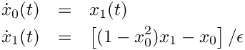
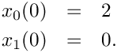

This example provides a minimal application code for integrating the van der Pol problem using a hand-written Forward Euler time loop. It does not yet use Tempus, Thyra, or other Trilinos abstractions for the state or time integration algorithm.
The purpose of this example is to establish the baseline structure used throughout the progression tutorial. Later examples introduce Tempus and Trilinos capabilities one step at a time while preserving the same basic problem setup whenever possible.
van der Pol Problem
The scaled explicit first-order ODE is

with initial conditions

For the model definition and additional details, see Tempus_Test::VanDerPolModel and van der Pol Model.
Outline
This example demonstrates the basic structure of an application-level time integration loop:
- declare the solution and its time derivative (stored in raw C++ arrays)
- set the initial conditions
- choose a constant timestep size
- advance the solution from the initial time to the final time
- evaluate the right-hand side of the governing equations
- apply the Forward Euler update
- check a simple pass/fail criterion
- accept the step and promote the solution to the next time step
- compare the final solution against regression gold values
The example also prints the evolving solution in a simple table with the columns:
- step index
- time
- solution component

- solution component


Here, passed indicates whether the hand-written stepping loop completed without producing an invalid solution. The final tutorial success condition additionally requires that the computed final solution match the regression gold values through the shared helper tutorialRegressionTest.
The next example replaces raw arrays with Thyra vectors while preserving the same overall algorithmic structure.